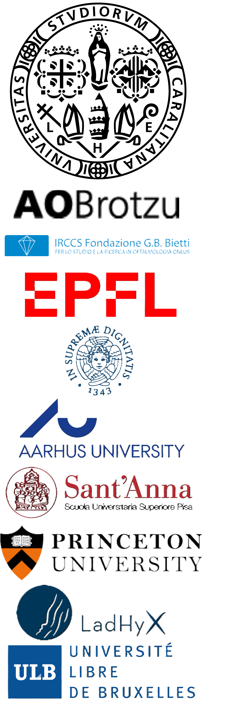

P.G. LEDDA
Researcher
@UniCa
HOME
PUBLICATIONS
COLLABORATIONS
TEACHING
RESEARCH HIGHLIGHTS
Friends and people with whom I collaborate(d)
Prof. G. Querzoli
(Università di Cagliari)
Prof. M.G. Badas
(Università di Cagliari)
Dr. A. Seoni
(Università di Cagliari)
M.D. G. Matta
(Azienda Ospedaliera Brotzu)
M.D. T. Rossi
(IRCCS Fondazione G.B. Bietti ONLUS)
Prof. F. Gallaire
(Phd Advisor, EPFL)
Prof. S. Camarri
(Università di Pisa)
Prof. M. Pezzulla
(Aarhus University)
Dr. G.A. Zampogna
(EPFL)
Prof. A. De Simone
(Sant'Anna School of Advanced Studies)
Prof. P-T Brun
(Princeton University)
Dr. E. Jambon-Puillet
(CNRS Researcher @ LadHyx, Ecole Polytechnique)
Prof. B. Scheid
(Université Libre de Bruxelles)
Prof. F. Sorin
(EPFL)
Prof. M. Wyart
(EPFL)
